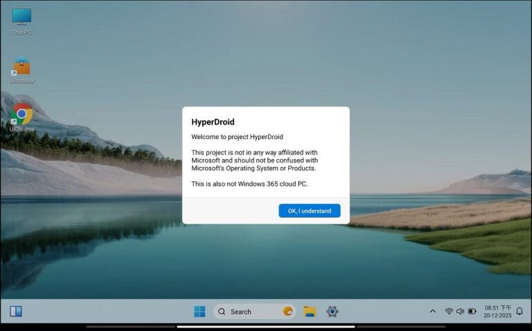
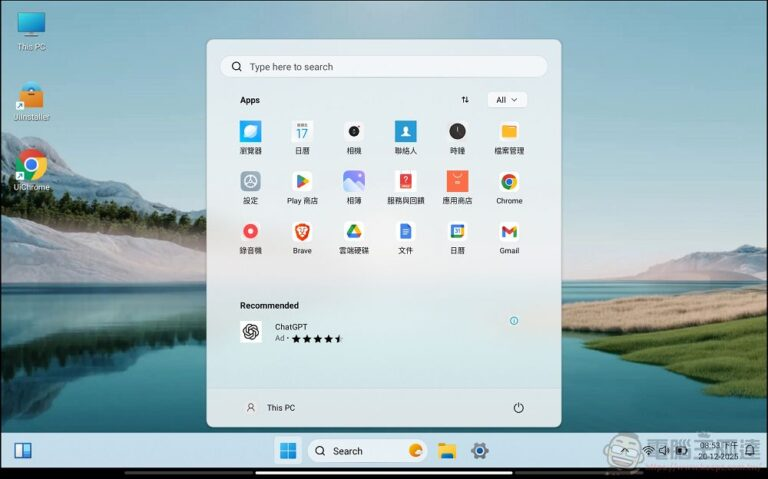

安卓平板配蓝牙键盘，我终于找到了能像电脑一样用它的东西
赶方案的下午，触摸屏打字的痛苦被一套 Windows 风格的桌面启动器彻底解决——从连不上键鼠到 Win 键快捷键全适配，中间踩过的坑和最终跑通的路。
周五下午三点，星巴克靠窗位置。
面前摊着一台三星 Tab S7，屏幕上是一个还没写完的项目方案。我正用触屏一个字一个字戳着——不是不能配蓝牙键盘，是配了之后的体验实在让人想把键盘扔回包里。
Android 原生桌面从来就没认真考虑过物理键盘用户。连上之后倒是能打字，但 Alt+Tab 没用，Win 键更是没反应，想切换个 App 还得抬手去点屏幕。鼠标光标倒是有了，但没有右键菜单，没有窗口半屏对齐，开个文档想调个尺寸都费劲。3C 配件厂商把"兼容 Android"吹得天花乱坠，真到要干活的时候才发现，那不过是"能打字"的同义词。
同事路过的时候瞥了一眼我的屏幕，说了句："你这平板装个 HyperDroid 啊，我用了快一年，配键盘能当小桌机用。"
折腾半小时，Win 键真的能用了
HyperDroid 的核心很简单——它是一个 Android 上的 Windows 11 风格桌面启动器。它的官网上把这套桌面体验讲得很直白。装上之后把它设为默认启动器，整个桌面就变成了 Win11 的样子：任务栏在底部，开始菜单在左下角，窗口可以拖动、最大化、半屏对齐。

我抱着试试的心态从官方下载拿到了安装包。安装不难，打开之后 HyperDroid 会引导你去 Android 的默认应用设置里把它设为主屏幕——这一步必须做，不设成默认启动器的话，按 Home 键还是会回到原生 Android，而且很多桌面级功能（鼠标指针、右键菜单、Win 键快捷键）也不会完整启用。
设完默认启动器之后，我重新连了蓝牙键盘。
第一次按下 Win 键的时候我愣了一下——开始菜单真的弹出来了。不是 Android 那种应用抽屉，是有动态磁贴、有搜索框、有推荐区的完整开始菜单。再按 Win+D，所有窗口瞬间最小化，露出桌面。Alt+Tab 在 App 之间切换，Win+← 把窗口贴到左半屏，Win+↑ 最大化。这些在 Windows 上用了十几年的肌肉记忆，居然完完整整搬到了 Android 上。

HyperDroid 还复刻了完整的文本编辑快捷键：Ctrl+A 全选、Ctrl+Z 撤销、Ctrl+F 查找、Ctrl+Shift+S 截图。内置浏览器支持 Ctrl+T 新开标签、Ctrl+L 聚焦地址栏、Ctrl+Tab 切换标签。如果你习惯用键盘而不是触屏，这些快捷键能把操作效率拉满一个台阶。
踩的第一个坑：我的键盘没有 Win 键
正当我以为一切顺风顺水的时候，问题来了——我那把便携蓝牙键盘是专为 Android 设计的，根本没有 Win 键。按来按去 Ctrl+Esc 倒是能弹出开始菜单，但总觉得不够顺手。
翻了一下 HyperDroid 的文档和设置选项，发现有两种替代方案。一种是把 Android 主键（那个圆圈或房子图标）映射成 Win 键，但我的键盘主键也没这个功能。另一种就是记住几个关键的组合键替代：Ctrl+Esc 打开开始菜单，Ctrl+Shift+M 显示桌面。虽然不如真 Win 键舒服，但比起原生 Android 什么都没有强太多。
设置里还有物理键盘布局的选项。我那把键盘是美式布局，选对之后之前几个键位错位的问题也解决了。中文输入法还是用 Android 系统自带的就行，HyperDroid 不自带输入法，这点文档里也明确说了，不用瞎找。
中途 Home 键跳回原生 Android，差点以为白装了
写方案写到一半，我不小心按了一下 Home 键。
屏幕闪了一下，直接回到了三星原生的 OneUI 桌面。我当时第一反应是 HyperDroid 崩了？数据丢了？重新点开 HyperDroid 还在，但再按 Home 还是回原生桌面。
后来才搞清楚，这是 HyperDroid 默认启动器丢失了。更新、系统重启、电池优化——很多原因都会导致 Android 悄悄把默认启动器切回去。解决方法很简单，进 Android 设置 → 应用 → 默认应用 → 启动器，重新选 HyperDroid 就行。v2.7 以上版本在 HyperDroid 自己的设置里也有一键设为默认启动器的开关，更方便。
为了防止再丢，我顺手把 HyperDroid 在电池优化里设成了"不优化"，在最近任务列表里给它加了锁——MIUI、ColorOS、OneUI 这些 ROM 对后台都管得很严，不加锁的话后台进程被清掉也可能导致启动器设置丢失。
收尾：它不是 Windows，但真的够用了
方案最后在 HyperDroid 桌面环境下敲完了。Win+E 打开文件管理器找素材，Alt+Tab 在文档和浏览器之间切换，Win+↑ 把窗口铺满屏幕——整个过程我几乎没碰触屏，全部用键盘搞定。
HyperDroid 不是模拟器，也不是云桌面，它就是一个把 Android 底层包装成 Windows 11 桌面体验的启动器。窗口管理、键鼠操作、快捷键映射这些桌面级功能做得很到位，而 Android 本身的 App 生态又不受任何影响。唯一需要注意的就是版本——v2.7 之前的 Win 键支持确实不完善，输入设备的各种问题也多，建议直接上最新版。
回到家之后我又把之前闲置的那把有线 USB 键鼠翻出来试了试。OTG 接上之后直接就能用，鼠标右键菜单、窗口拖动、指针大小设置——比蓝牙还稳。现在那台三星平板不再只是追剧看漫画的娱乐设备了，偶尔需要出门办公的时候，它真的能顶个小桌机的用。HyperDroid 这套桌面包装和配套文档在GitHub、Gitee和GitCode三个仓库都能拿到，顺手查了一下资料更新节奏也基本同步。